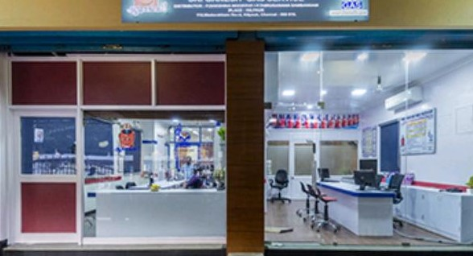
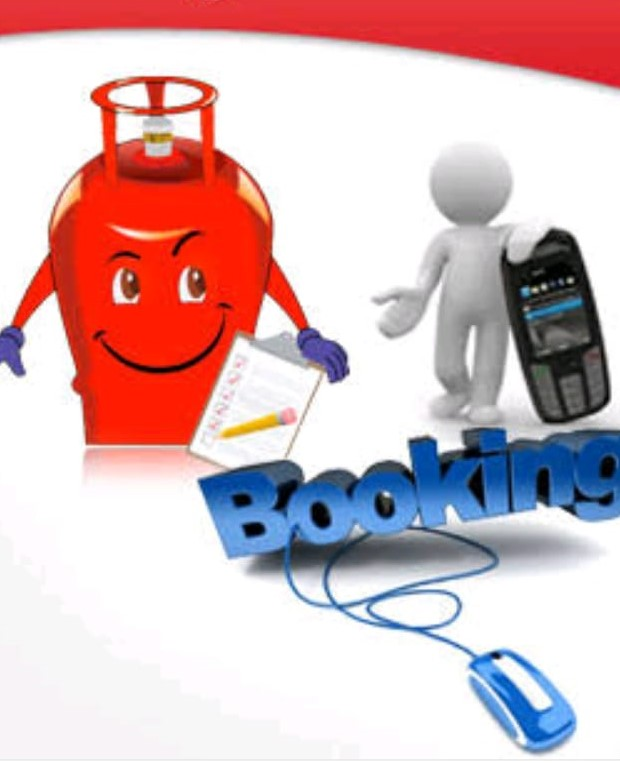
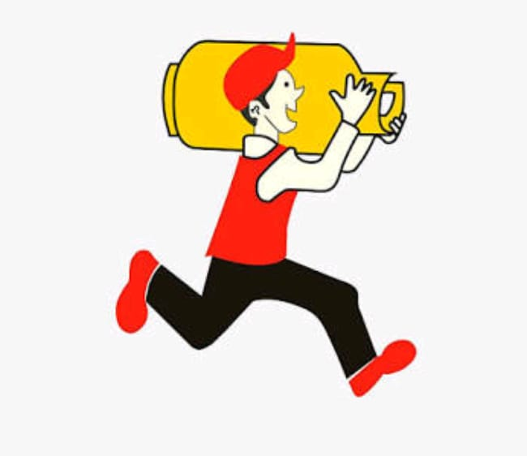
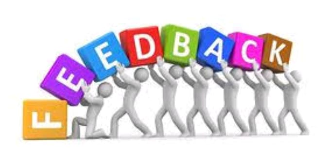

CUSTOMER
A customer(sometimes known as a client,buyer, or purchaser) is the recipient of a goods,survices,product or an idea obtained from a sller,vender, or supplier via a finacial transaction or exachange for money or some other valuable consideration.A customer can book the gas after registor and login into gas agency sytem Customer are allows to book the gas whenever needed.Customer can give thier feedback about the gas agency
|
|
GAS AGENCY
A gas agency is the process of setting up of a respective gas distributorship starts with the release of an open advertisement in the newspapers informing the locations where particuler campany proposes to set up respective gas agencies.A gas agency get the oder request from thier customer and deliver the gas cyllinders to thier address based on thier demand.This process is made computerized.Based on this booking for a customer is made very simple and easier.
|
BOOKING
Booking a gas used to be a long and tedious process earlier,since the only way to do so was by visiting the specific delership in person.this was followed by an axious wait as a cylinder would be dispatched based on its availability,with cylinders going missing or not reaching the recipient on many occasions.Booking process making gas agency services more cunsumer-friendly and transparent.It is safe and convient method of booking gas.
| |
DELIVERY
Delivery is the process of transporting goods from a source location to a predefined destination.A delivery of a gas is done by gas agency system to customer.There is two types of delivery like domestic and commercial delivery.Customer can check his delivery status by using login credentials.The delivery charge is made up of a customer charge, volumetric distribution charges and a storage charge. The customer charge covers many of the fixed costs to deliver safe and reliable natural gas.
| |
FEEDBACK
Feeback is a information about reactions to a product and used as basis for improvement.Customer can give thier feedback about gas agency.It may be positive or negative feedback.Poor customer relations can cause a business to lose its current and potential customers, reputation, employees and profits. Good customer relations include acknowledging customer loyalty, resolving issues in a timely manner and prioritizing excellent customer experiences.So feedback is very usefull.
|
|